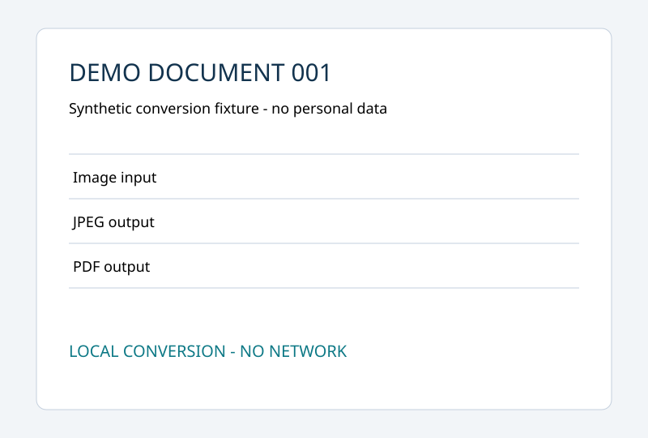

Изображение → JPEG и PDF
Локальное демо. Документ вымышленный. Выполняются те же функции sharp/pdf-lib, что использует бот. MAX и Bitrix24 не вызываются.
Входной документ

Результат JPEG
Скачать JPEG
Открыть PDF
 Скачать JPEGОткрыть PDFСкачать JPEGОткрыть PDF
Скачать JPEGОткрыть PDFСкачать JPEGОткрыть PDF